Eco Feel – Simte ecologic!
Educație și conștientizare privind protecția mediului, cu elevi de liceu din Suceava, prin sesiuni de informare, workshop-uri, materiale realizate de elevi, tabără și campanie de diseminare.
Obiectivul general
Creșterea gradului de informare și conștientizare a elevilor din județul Suceava, în vederea creării unei atitudini pro-active față de mediul înconjurător, prin implicarea acestora în activități practice și educative.
Obiective specifice
- Conștientizarea problemelor de mediu în rândul a minimum 501 elevi cu vârsta între 14 și 18 ani, prin realizarea unei platforme de inițiativă comună privind aspecte legate de protecția mediului, facilitarea schimbului de opinii în cadrul activităților proiectului, prin intermediul unui site web și prin implicarea în constituirea unui club ecologic;
- Creșterea gradului de implicare a elevilor în diseminarea și rezolvarea aspectelor de mediu, prin conceperea, realizarea și distribuția de materiale foto, audio-video și tipărite cu conținut educativ privind protecția mediului, de către elevi, pentru elevi.
Ce s-a făcut
- 501 elevi de 14–18 ani au participat la 5 sesiuni de instruire pe 16 problematici de mediu;
- 40 de elevi selectați au lucrat în ateliere de diseminare: documentare, texte, fotografii, filmări, acțiuni de igienizare în natură;
- 12 pliante tematice, o broșură de 24 de pagini, 12 spoturi radio și 12 spoturi TV de informare, un documentar TV de 15 minute, un DVD – toate pe baza materialelor concepute de elevi;
- Tabăra EcoFeel la Pojorâta, cu 30 de elevi și 3 instructori: igienizare, drumeție tematică, vizită în aria protejată Ariniș (Gura Humorului) și la o firmă de colectare selectivă din Ilișești;
- 3 acțiuni de campanie de diseminare în Suceava (colegiu, zona centrală, zona universității);
- Clubul EcoFeel, înființat la Colegiul Economic „Dimitrie Cantemir” prin parteneriatul celor trei organizații, pentru continuarea inițiativelor de mediu.
Rolul fundației
Fundația Umanitară „Adam-Mădălin” a coordonat sesiunile de instruire pentru elevi, activitățile de diseminare, realizarea materialelor de informare, tabăra EcoFeel, campania de diseminare și înființarea Clubului EcoFeel.
Fotografii
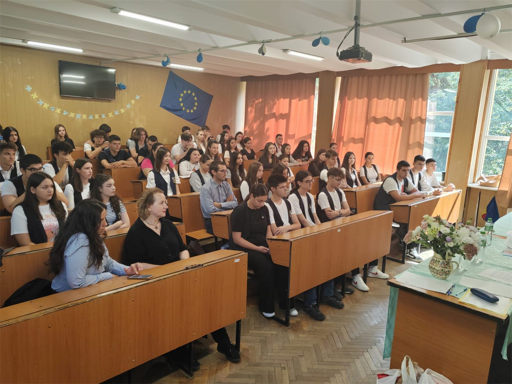
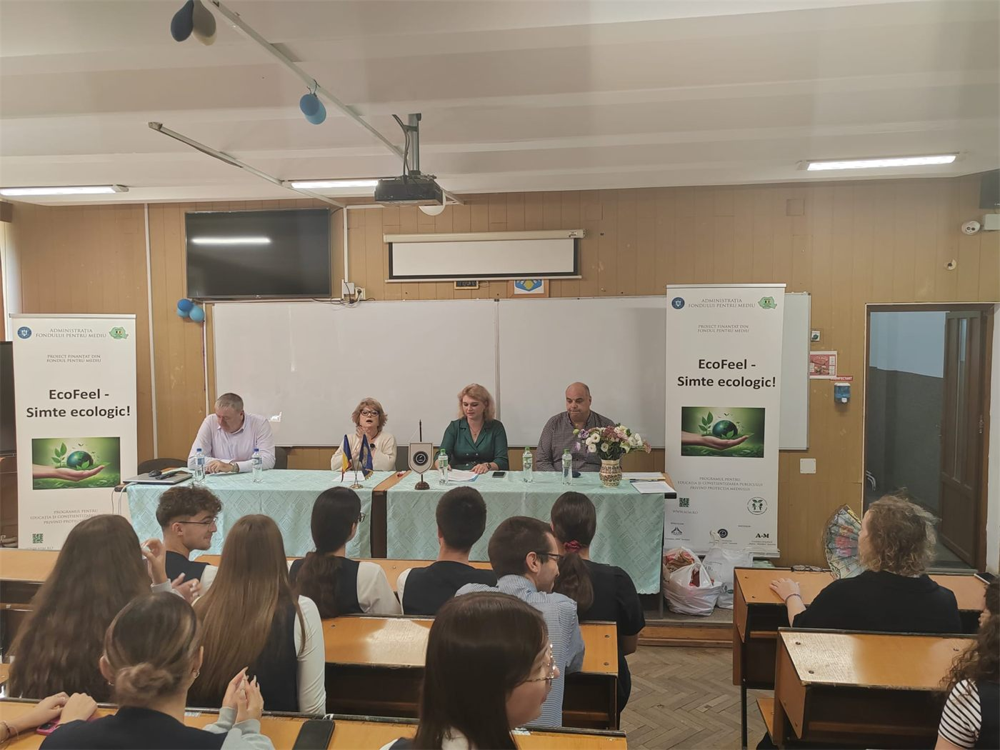
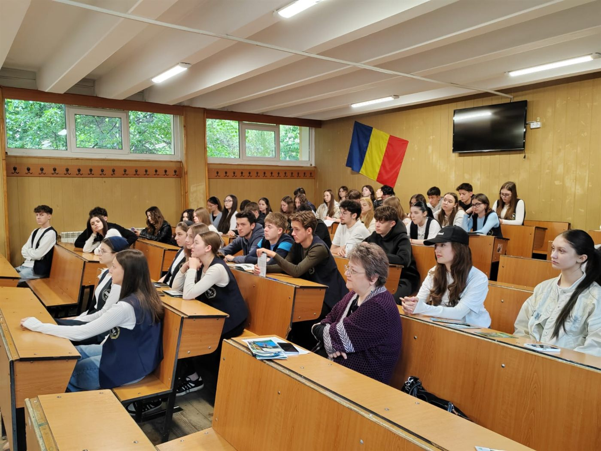
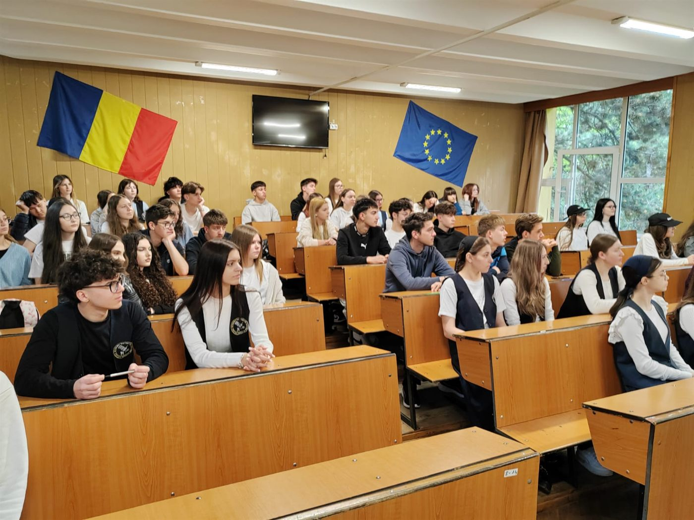
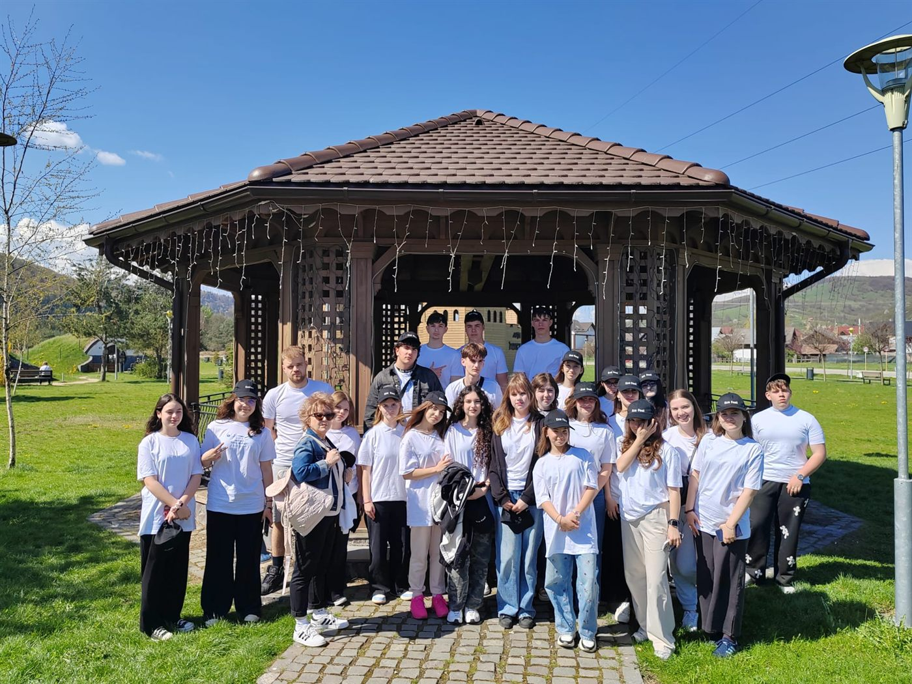
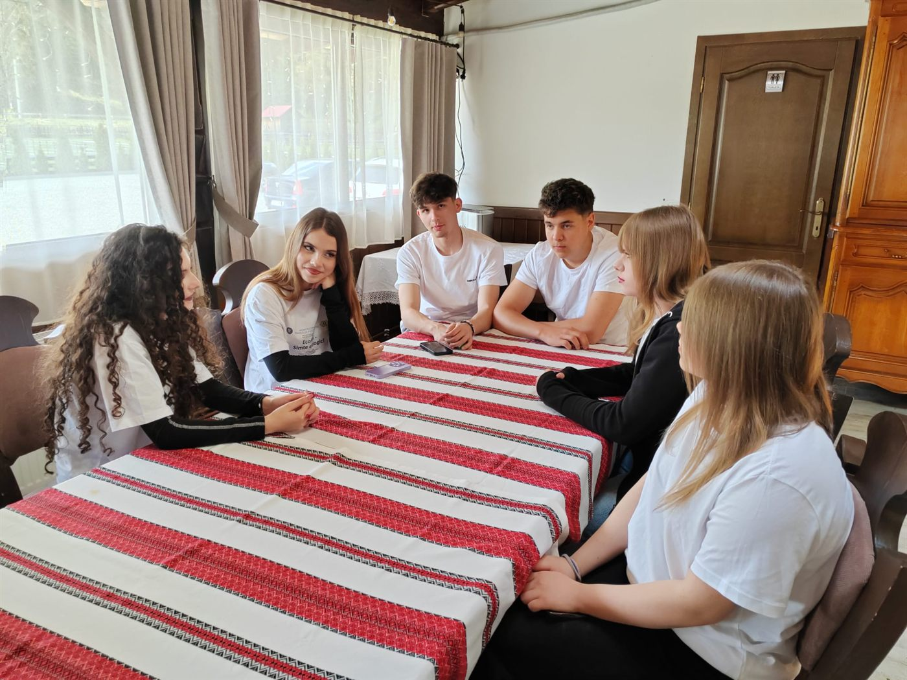
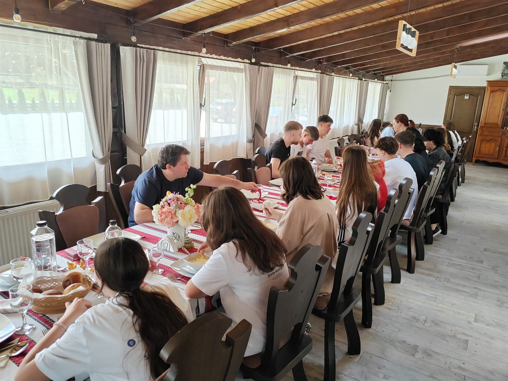
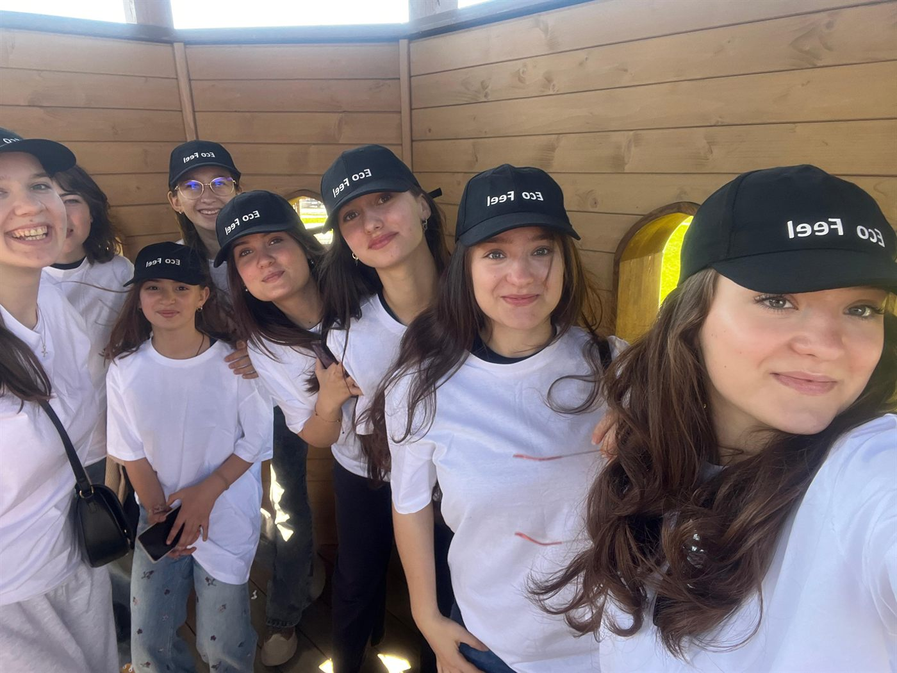
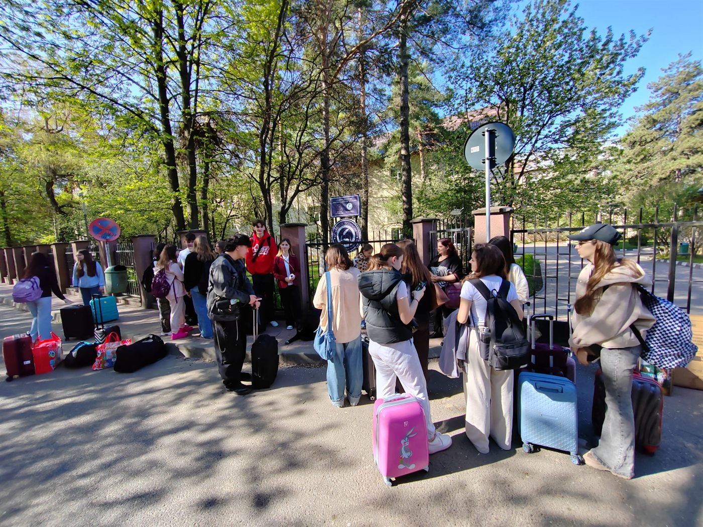
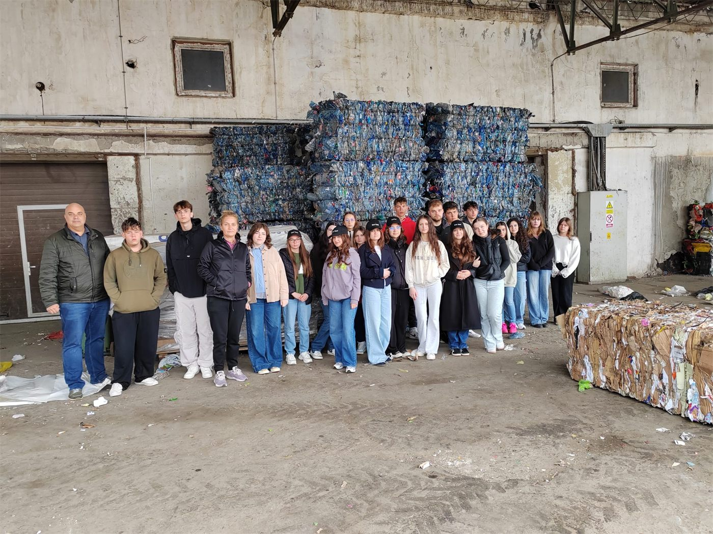
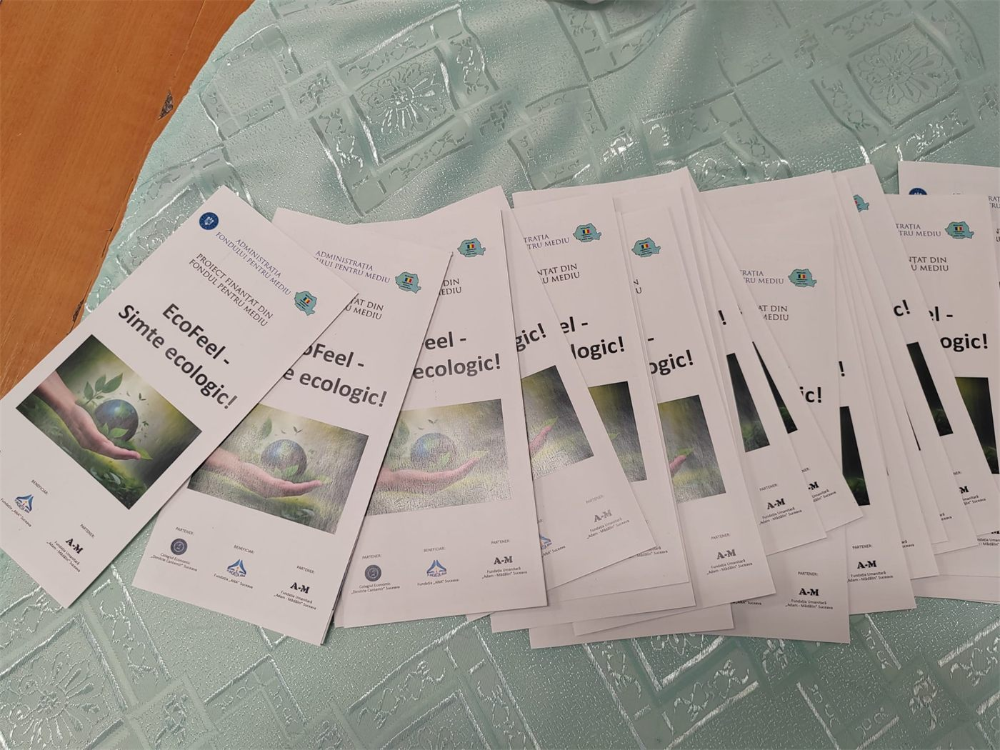
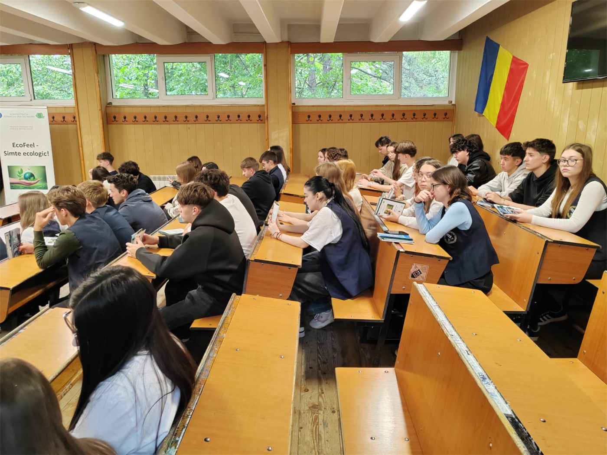